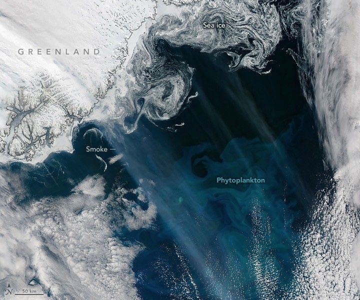

Smoky Skies and Blooming Seas
Throughout May and June 2025, NASA satellites observed hints of a phytoplankton bloom off the coast of southeast Greenland. Clouds prevented optical sensors from getting a clear view on most days, but on June 3, 2025, there was another culprit: wildfire smoke.
The edge of the bloom is visible in this image, acquired on that day with the MODIS (Moderate Resolution Imaging Spectroradiometer) on NASA’s Aqua satellite. Northwesterly winds propelled a river of haze over the ice sheet and Greenland’s Sermersooq municipality, past swirling tendrils of sea ice along the coast, and over the waters of the Denmark Strait.
A bloom is essentially an abundance of phytoplankton—tiny, plant-like organisms that often float near the ocean surface. Phytoplankton fuel the ocean by feeding other plankton, fish, and ultimately bigger creatures. They also play a key role in the carbon cycle and produce oxygen.
The type of phytoplankton present in this bloom cannot be identified based on this natural-color image alone. It might contain coccolithophores, which are plated with white calcium carbonate that can give the ocean a milky hue. It could also contain diatoms, a microscopic form of algae with silica shells and plenty of chlorophyll, a green pigment involved in photosynthesis.
The colorful blooms appear hazy in places due to smoke from wildland fires burning in Canada’s boreal forests. On multiple occasions in late May, intense blazes in Alberta, Saskatchewan, and British Columbia generated pyrocumulonimbus (PyroCb) clouds. These towering features, powered by the heat of fires, generate strong convective updrafts that can pull smoke into the upper troposphere and lower stratosphere, allowing jet stream winds to transport it widely.
As smoke from the Canadian fires crossed oceans and continents, NASA astronauts photographed the phenomenon from the International Space Station.
I noticed smoke over the Northern U.S. and Canada a few days ago, and it took me a little while to understand what it was. From our perspective, it almost looks like a differently colored cloud formation.
The brown hue to the clouds and the fact that they overlapped the white… pic.twitter.com/y8dOLENBrA
— Nichole “Vapor” Ayers (@Astro_Ayers) June 3, 2025
While much of the smoke visible over the Denmark Strait was likely cruising high above the ocean, it’s possible that some of the heavier particles from the pulses of smoke in recent weeks settled onto the ocean. Previous research indicates that certain nutrients found in particles of wildland fire smoke—such as nitrogen and iron—have helped amplify blooms in the Arctic Ocean and Southern Ocean.